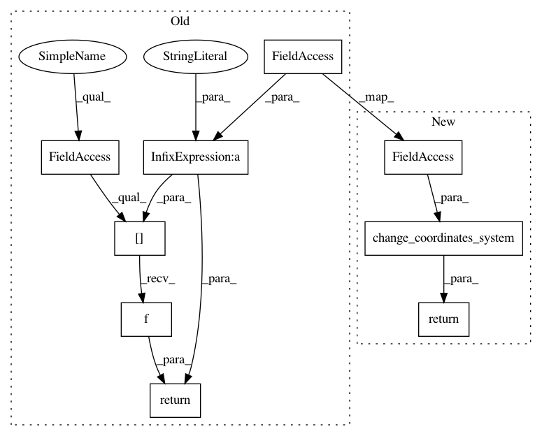

0176f82ea2730100451729c3494227b1e3f073a1,geomstats/geometry/hyperbolic.py,Hyperbolic,random_uniform,#Hyperbolic#Any#Any#,314
Before Change
size = (n_samples, self.dimension)
samples = bound * 2. * (gs.random.rand(*size) - 0.5)
return self.coords_transform["intrinsic-" + self.coords_type](samples)
class HyperbolicMetric(RiemannianMetric):
Class that defines operations using a hyperbolic metric.
After Change
size = (n_samples, self.dimension)
samples = bound * 2. * (gs.random.rand(*size) - 0.5)
return\
Hyperbolic.change_coordinates_system(samples, "intrinsic",
self.coords_type)
class HyperbolicMetric(RiemannianMetric):
Class that defines operations using a hyperbolic metric.
In pattern: SUPERPATTERN
Frequency: 3
Non-data size: 9
Instances
Project Name: geomstats/geomstats
Commit Name: 0176f82ea2730100451729c3494227b1e3f073a1
Time: 2020-04-03
Author: gerald@pop-os.localdomain
File Name: geomstats/geometry/hyperbolic.py
Class Name: Hyperbolic
Method Name: random_uniform
Project Name: geomstats/geomstats
Commit Name: 0176f82ea2730100451729c3494227b1e3f073a1
Time: 2020-04-03
Author: gerald@pop-os.localdomain
File Name: geomstats/geometry/hyperbolic.py
Class Name: Hyperbolic
Method Name: from_coordinates
Project Name: geomstats/geomstats
Commit Name: 0176f82ea2730100451729c3494227b1e3f073a1
Time: 2020-04-03
Author: gerald@pop-os.localdomain
File Name: geomstats/geometry/hyperbolic.py
Class Name: Hyperbolic
Method Name: to_coordinates